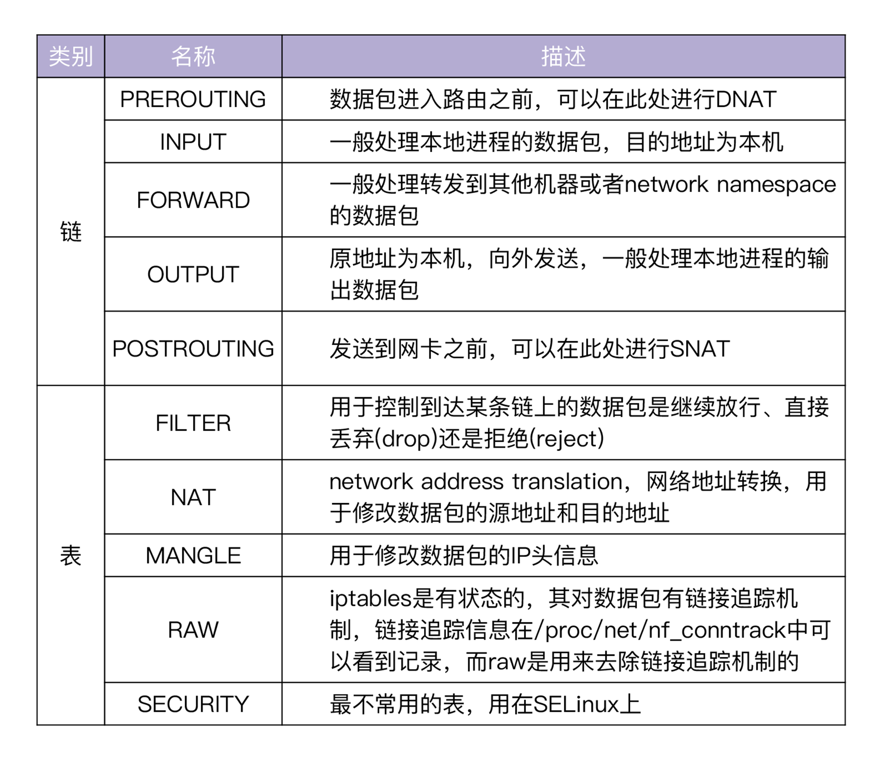
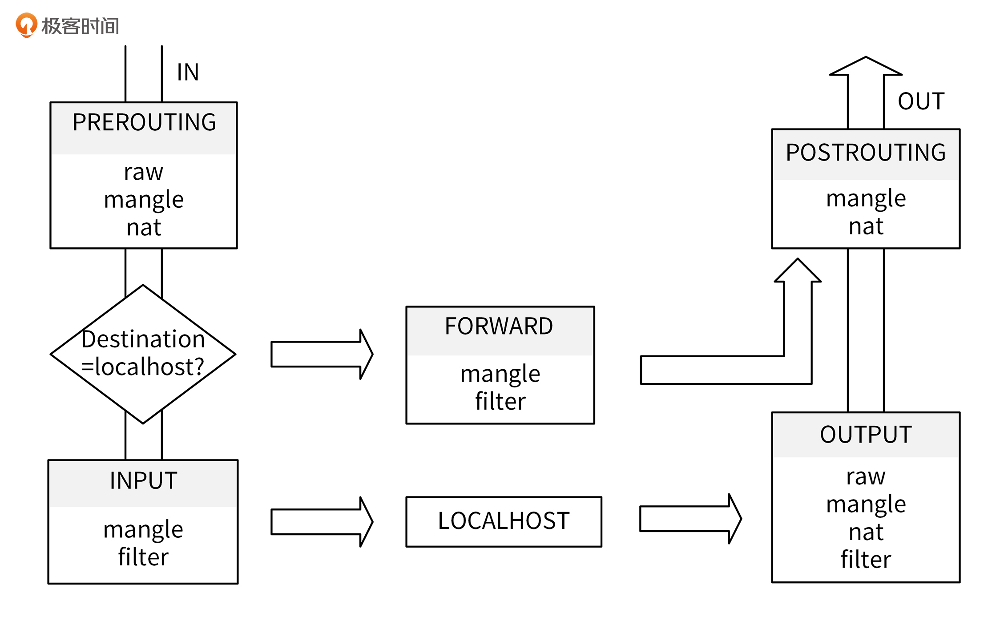
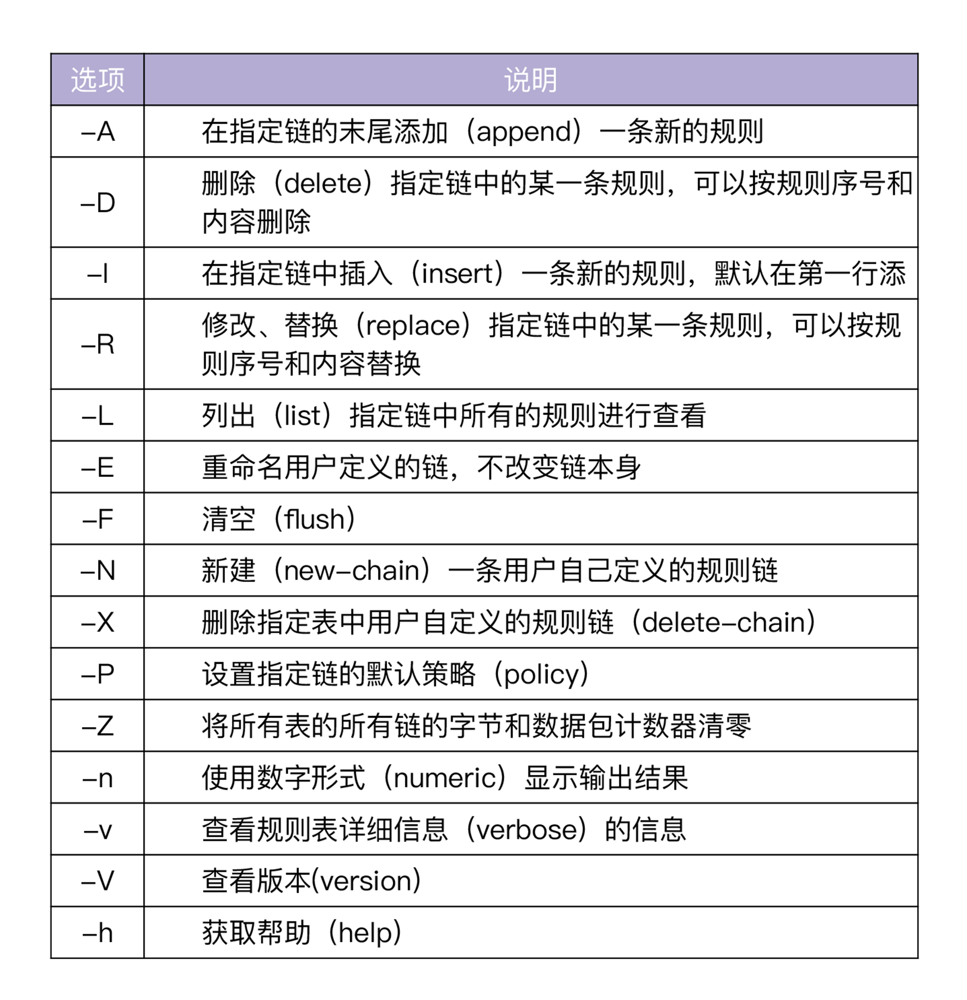
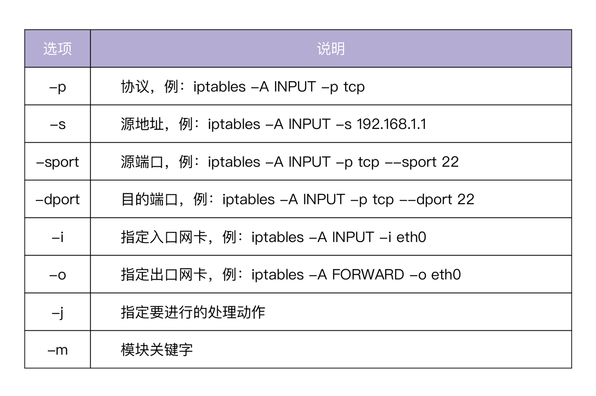
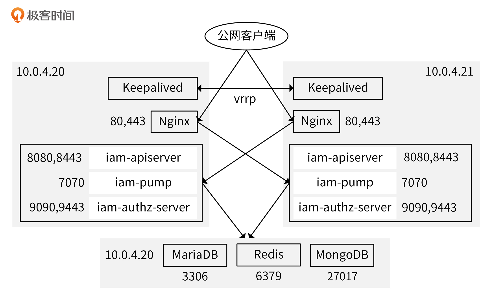

- 00 开篇词 从 0 开始搭建一个企业级 Go 应用.md.html
- 01 IAM系统概述：我们要实现什么样的 Go 项目？.md.html
- 02 环境准备：如何安装和配置一个基本的 Go 开发环境？.md.html
- 03 项目部署：如何快速部署 IAM 系统？.md.html
- 04 规范设计（上）：项目开发杂乱无章，如何规范？.md.html
- 05 规范设计（下）：commit 信息风格迥异、难以阅读，如何规范？.md.html
- 06 目录结构设计：如何组织一个可维护、可扩展的代码目录？.md.html
- 07 工作流设计：如何设计合理的多人开发模式？.md.html
- 08 研发流程设计（上）：如何设计 Go 项目的开发流程？.md.html
- 09 研发流程设计（下）：如何管理应用的生命周期？.md.html
- 10 设计方法：怎么写出优雅的 Go 项目？.md.html
- 11 设计模式：Go常用设计模式概述.md.html
- 12 API 风格（上）：如何设计RESTful API？.md.html
- 13 API 风格（下）：RPC API介绍.md.html
- 14 项目管理：如何编写高质量的Makefile？.md.html
- 15 研发流程实战：IAM项目是如何进行研发流程管理的？.md.html
- 16 代码检查：如何进行静态代码检查？.md.html
- 17 API 文档：如何生成 Swagger API 文档 ？.md.html
- 18 错误处理（上）：如何设计一套科学的错误码？.md.html
- 19 错误处理（下）：如何设计错误包？.md.html
- 20 日志处理（上）：如何设计日志包并记录日志？.md.html
- 21 日志处理（下）：手把手教你从 0 编写一个日志包.md.html
- 22 应用构建三剑客：Pflag、Viper、Cobra 核心功能介绍.md.html
- 23 应用构建实战：如何构建一个优秀的企业应用框架？.md.html
- 24 Web 服务：Web 服务核心功能有哪些，如何实现？.md.html
- 25 认证机制：应用程序如何进行访问认证？.md.html
- 26 IAM项目是如何设计和实现访问认证功能的？.md.html
- 27 权限模型：5大权限模型是如何进行资源授权的？.md.html
- 28 控制流（上）：通过iam-apiserver设计，看Web服务的构建.md.html
- 29 控制流（下）：iam-apiserver服务核心功能实现讲解.md.html
- 30 ORM：CURD 神器 GORM 包介绍及实战.md.html
- 31 数据流：通过iam-authz-server设计，看数据流服务的设计.md.html
- 32 数据处理：如何高效处理应用程序产生的数据？.md.html
- 33 SDK 设计（上）：如何设计出一个优秀的 Go SDK？.md.html
- 34 SDK 设计（下）：IAM项目Go SDK设计和实现.md.html
- 35 效率神器：如何设计和实现一个命令行客户端工具？.md.html
- 36 代码测试（上）：如何编写 Go 语言单元测试和性能测试用例？.md.html
- 37 代码测试（下）：Go 语言其他测试类型及 IAM 测试介绍.md.html
- 38 性能分析（上）：如何分析 Go 语言代码的性能？.md.html
- 39 性能分析（下）：API Server性能测试和调优实战.md.html
- 40 软件部署实战（上）：部署方案及负载均衡、高可用组件介绍.md.html
- 41 软件部署实战（中）：IAM 系统生产环境部署实战.md.html
- 42 软件部署实战（下）：IAM系统安全加固、水平扩缩容实战.md.html
- 43 技术演进（上）：虚拟化技术演进之路.md.html
- 44 技术演进（下）：软件架构和应用生命周期技术演进之路.md.html
- 45 基于Kubernetes的云原生架构设计.md.html
- 46 如何制作Docker镜像？.md.html
- 47 如何编写Kubernetes资源定义文件？.md.html
- 48 IAM 容器化部署实战.md.html
- 49 服务编排（上）：Helm服务编排基础知识.md.html
- 50 服务编排（下）：基于Helm的服务编排部署实战.md.html
- 51 基于 GitHub Actions 的 CI 实战.md.html
- 特别放送 Go Modules依赖包管理全讲.md.html
- 特别放送 Go Modules实战.md.html
- 特别放送 IAM排障指南.md.html
- 特别放送 分布式作业系统设计和实现.md.html
- 特别放送 给你一份Go项目中最常用的Makefile核心语法.md.html
- 特别放送 给你一份清晰、可直接套用的Go编码规范.md.html
- 直播加餐 如何从小白进阶成 Go 语言专家？.md.html
- 结束语 如何让自己的 Go 研发之路走得更远？.md.html
- 捐赠
42 软件部署实战（下）：IAM系统安全加固、水平扩缩容实战
你好，我是孔令飞。
这一讲和前面两讲，都是介绍如何基于物理机/虚拟机来部署IAM的。在前面两讲，我们了解了如何部署一个高可用的 IAM 应用，今天就再来看看IAM 应用安全和弹性伸缩能力的构建方式。在这一讲中，我会带你加固IAM应用的安全性，并介绍如何具体执行扩缩容步骤。
接下来，我们先来看下如何加固IAM应用的安全性。
IAM应用安全性加固
iam-apiserver、iam-authz-server、MariaDB、Redis和MongoDB这些服务，都提供了绑定监听网卡的功能。我们可以将这些服务绑定到内网网卡上，从而只接收来自于内网的请求，通过这种方式，可以加固我们的系统。
我们也可以通过iptables来实现类似的功能，通过将安全问题统一收敛到iptables规则，可以使我们更容易地维护安全类设置。
这门课通过iptables来加固系统，使系统变得更加安全。下面，我先来对iptables工具进行一些简单的介绍。
iptables简介
iptables是Linux下最优秀的防火墙工具，也是Linux内核中netfilter网络子系统用户态的工具。
netfilter提供了一系列的接口，在一个到达本机的数据包，或者经本机转发的数据包流程中添加了一些可供用户操作的点，这些点被称为HOOK点。通过在HOOK点注册数据包处理函数，可以实现数据包转发、数据包过滤、地址转换等功能。
用户通过iptables工具定义各种规则，这些规则通过iptables传给内核中的netfilter。最终，netfilter会根据规则对网络包进行过滤。Linux系统一般会默认安装iptables软件。防火墙根据iptables里的规则，对收到的网络数据包进行处理。
iptables里的数据组织结构分为表、链、规则。
- 表（tables）:表可以提供特定的功能，每个表里包含多个链。iptables里面一共有5个表，分别是filter、nat、mangle、raw、security。这些表，分别用来实现包过滤、网络地址转换、包重构、数据追踪处理和SELinux标记设置。
- 链（chains）:链是数据包传播的路径，每一条链中可以有一个或多个规则。当一个数据包到达一个链时，iptables会从链中第一条规则开始，检查该数据包是否满足规则所定义的条件。如果满足，就会根据该条规则所定义的方法，处理该数据包。否则，就继续检查下一条规则。如果该数据包不符合链中任一条规则，iptables就会根据该链预先定义的默认策略来处理数据包。
- 规则（rules）：规则存储在内核空间的信息包过滤表中，用来描述“如果数据包满足所描述的条件，就按照要求处理这个数据包，如果不满足，就判断下一条规则”。
其中，iptables中表和链的种类及其功能，如下表所示：

上面的表格中，五张表的处理是有顺序的。当数据包到达某一条链时，会按照RAW、MANGLE、NAT、FILTER、SECURITY的顺序进行处理。
到这里，我介绍了关于iptables的一些基础知识，但这还远远不够。要想使用iptables来加固你的系统，你还需要掌握iptables工具的使用方法。接下来，我先来介绍下iptables是如何处理网络数据包的。
网络数据包处理流程
网络数据包的处理流程如下图所示：

具体可以分为两个步骤。
第一步，当数据包进入网卡后，它首先进入PREROUTING链，根据目的IP判断是否转发出去。
第二步分为两种情况：如果数据包目的地是本机，它会到达INPUT链。到达后，任何进程都会收到它。本机上的程序可以发送数据包，这些数据包会经过OUTPUT链，然后经POSTROUTING链输出；如果数据包是要转发出去，并且内核允许转发，那么数据包会经过FORWARD链，最后从POSTROUTING链输出。
iptables工具使用方式介绍
iptables的功能强大，所以使用方法也非常多样。这里，我来介绍下iptables工具的使用方式，并给出一些使用示例。
- 命令格式
iptables的语法格式为：
iptables [-t 表名] 命令选项 [链名] [条件匹配] [-j 目标动作或跳转]
下面是一个iptables的使用示例：
iptables -t nat -I PREROUTING -p tcp --dport 8080 -j DNAT --to 10.0.4.88
这里对上面涉及到的一些参数进行说明。
- 表名/链名：指定iptables命令所操作的表/链。
- 命令选项：指定处理iptables规则的方式，例如插入、增加、删除、查看等。
- 条件匹配：指定对符合条件的数据包进行处理。
- 目标动作或跳转：防火墙处理数据包的方式。
iptables的命令选项又分为管理控制选项和通用选项。
管理控制选项如下：

通用选项如下：

处理数据包的方式（目标动作或跳转）有多种，具体如下表所示：

上面，我介绍了iptables工具的使用方式。因为内容有点多，你可能仍然不知道如何使用iptables工具。没关系，接下来你可以结合我举的一些例子来看下。
- 命令示例
下面的命令示例，默认使用了 FILTER 表，也即规则存放在 FILTER 表中，相当于每一条iptables命令都添加了-t filter 参数。
- 拒绝进入防火墙的所有ICMP协议数据包：
$ iptables -I INPUT -p icmp -j REJECT
- 允许防火墙转发除ICMP协议以外的所有数据包：
$ iptables -A FORWARD -p ! icmp -j ACCEPT
- 拒绝转发来自192.168.1.10主机的数据，允许转发来自192.168.0.0/24网段的数据：
$ iptables -A FORWARD -s 192.168.1.11 -j REJECT
$ iptables -A FORWARD -s 192.168.0.0/24 -j ACCEPT
- 丢弃从外网接口（eth1）进入防火墙本机的源地址为私网地址的数据包：
$ iptables -A INPUT -i eth1 -s 192.168.0.0/16 -j DROP
$ iptables -A INPUT -i eth1 -s 172.16.0.0/12 -j DROP
$ iptables -A INPUT -i eth1 -s 10.0.0.0/8 -j DROP
- 只允许管理员从202.13.0.0/16网段使用SSH远程登录防火墙主机：
$ iptables -A INPUT -p tcp --dport 22 -s 202.13.0.0/16 -j ACCEPT
$ iptables -A INPUT -p tcp --dport 22 -j DROP
- 允许本机开放从TCP端口20-1024提供的应用服务：
$ iptables -A INPUT -p tcp --dport 20:1024 -j ACCEPT
$ iptables -A OUTPUT -p tcp --sport 20:1024 -j ACCEPT
- 允许转发来自192.168.0.0/24局域网段的DNS解析请求数据包：
$ iptables -A FORWARD -s 192.168.0.0/24 -p udp --dport 53 -j ACCEPT
$ iptables -A FORWARD -d 192.168.0.0/24 -p udp --sport 53 -j ACCEPT
- 禁止其他主机ping防火墙主机，但是允许从防火墙上ping其他主机：
$ iptables -I INPUT -p icmp --icmp-type Echo-Request -j DROP
$ iptables -I INPUT -p icmp --icmp-type Echo-Reply -j ACCEPT
$ iptables -I INPUT -p icmp --icmp-type destination-Unreachable -j ACCEPT
- 禁止转发来自MAC地址为00：0C：29：27：55：3F的数据包和主机的数据包：
$ iptables -A FORWARD -m mac --mac-source 00:0c:29:27:55:3F -j DROP
- 对外开放TCP端口20、21、25、110，以及被动模式FTP端口1250-1280：
$ iptables -A INPUT -p tcp -m multiport --dport 20,21,25,110,1250:1280 -j ACCEPT
- 禁止转发源IP地址为192.168.1.20-192.168.1.99的TCP数据包：
$ iptables -A FORWARD -p tcp -m iprange --src-range 192.168.1.20-192.168.1.99 -j DROP
- 禁止转发与正常TCP连接无关的非syn请求数据包：
$ iptables -A FORWARD -m state --state NEW -p tcp ! --syn -j DROP
- 拒绝访问防火墙的新数据包，但允许响应连接或与已有连接相关的数据包：
$ iptables -A INPUT -p tcp -m state --state NEW -j DROP
$ iptables -A INPUT -p tcp -m state --state ESTABLISHED,RELATED -j ACCEPT
- 只开放本机的web服务（80）、FTP(20、21、20450-20480)，放行外部主机发往服务器其他端口的应答数据包，将其他入站数据包都进行丢弃处理：
$ iptables -I INPUT -p tcp -m multiport --dport 20,21,80 -j ACCEPT
$ iptables -I INPUT -p tcp --dport 20450:20480 -j ACCEPT
$ iptables -I INPUT -p tcp -m state --state ESTABLISHED -j ACCEPT
$ iptables -P INPUT DROP
到这里，我们已经了解了iptables的功能，下面来看看如何使用iptables来加固IAM应用。我把它分成内网不安全和内网安全两种情况。
IAM安全加固（内网不安全）
在设置iptables规则之前，我们需要先梳理系统的访问关系，然后根据这些访问关系设置iptables规则。访问关系如下图所示：

你可以看到，IAM系统服务互访关系分为下面这4种：
- 允许公网客户端访问Nginx的80和443端口。
- Keepalived服务之间能够互发VRRP协议包。
- Nginx访问各节点上iam-apiserver、iam-authz-server和iam-pump组件开启的HTTP/HTTPS/GRPC服务。
- iam服务可以从各节点访问Redis、MariaDB、MongoDB数据库。
这里，我们假定IAM系统部署在一个非常大的内网中，该内网部署了很多其他团队的服务，有很多其他团队的研发、测试等人员在内网中执行各种操作。也就是说，我们处在一个不安全的内网中。这时候，如果要加固我们的系统，最安全的方式是屏蔽掉未知的来源IP。
内网不安全的情况下，加固系统可以分为3大步骤，每个步骤中又有一些小步骤。另外，需要新增节点或者删除节点时，也需要进行一些变更操作。下面我们来具体看下。
第一步，设置防火墙规则。
基于上面说到的几种互访关系，我们可以在各个节点上设置iptables规则来加固系统。我将这些规则设置编写成了go工具，用来自动生成设置这些规则的shell脚本。
具体设置的过程可以分为5步。
- 进入iam项目源码根目录。
- 配置accesss.yaml（工具根据此配置，自动生成iptables设置脚本），内容如下（位于configs/access.yaml文件）：
# 允许登录SSH节点的来源IP，可以是固定IP(例如10.0.4.2)，也可以是个网段，0.0.0.0/0代表不限制来源IP
ssh-source: 10.0.4.0/24
# IAM应用节点列表（来源IP）
hosts:
- 10.0.4.20
- 10.0.4.21
# 来源IP可以访问的应用端口列表（iam-apiserver, iam-authz-server, iam-pump对外暴露的的端口）
ports:
- 8080
- 8443
- 9090
- 9443
- 7070
# 来源IP可以访问的数据库端口列表（Redis, MariaDB, MongoDB）
dbports:
- 3306
- 6379
- 27017
上面的配置中，我们指定了允许登陆机器的子网、Nginx需要访问的端口列表和各节点需要访问的数据库端口列表。
- 生成iptables初始化脚本：
$ go run tools/geniptables/main.go -c access.yaml -t app -a -o firewall.sh
$ ls firewall.sh
firewall.sh
你可以打开firewall.sh文件，查看该脚本设置的规则。- 4. 将firewall.sh脚本拷贝到10.0.4.20和10.0.4.21节点执行：
$ scp firewall.sh [email protected]:/tmp/
$ scp firewall.sh [email protected]:/tmp/
登陆10.0.4.20和10.0.4.21机器，执行/tmp/firewall.sh。
- 在10.0.4.20（数据库节点）节点上，设置iptables规则，以允许各节点访问：
因为数据库节点也位于10.0.4.20节点，所以只需要添加新的rule，并将iptables -A INPUT -j DROP规则放到最后执行即可。
$ go run tools/geniptables/main.go -c access.yaml -t db -o addrules.sh
然后，将addrules.sh脚本拷贝到10.0.4.20节点执行。
注意，因为iptables是按顺序进行规则过滤的，所以需要将iptables -A INPUT -j DROP规则放在新设置规则的后面，否则执行不到新设置的规则。你可以在设置完iptables规则之后，执行下面的命令来将DROP放到最后：
iptables -A INPUT -j LOG --log-level 7 --log-prefix "Default Deny"
iptables -A INPUT -j DROP
生成的addrules.sh脚本加入以上设置。
第二步，设置重启自动加载iptables规则。
前面我们在各个节点设置了iptables规则，但是这些规则在系统重启后会丢失。为了使系统重启后自动重新设置这些规则，我们需要将当前的iptables规则保存起来，让系统重启时自动加载。需要进行下面两个步骤。
- 保存现有的规则：
$ sudo iptables-save > /etc/sysconfig/iptables
- 添加下面的命令行到/etc/rc.d/rc.local文件中：
$ iptables-restore < /etc/sysconfig/iptables
第三步，自动化。
在上面的步骤中，我们自动生成了iptables规则，并手动登陆到节点进行设置。你肯定也发现了，整个流程手动操作过多，容易出错，效率还低。你可以参考设置过程，将这些设置工作自动化，比如编写脚本，一键刷新所有节点的iptables规则。
另外，我们再来看下在新增节点和删除节点两种场景下，如何设置iptables规则。
场景1：新增节点
如果我们要扩容一个节点，也需要在新节点设置防火墙规则，并在数据库节点设置防火墙规则允许来自新节点的访问。
假如我们新增一个10.0.4.22节点，这里要设置防火墙规则，需要下面的4个步骤。
- 编辑access.yaml，在hosts列表下新增10.0.4.22节点IP。编辑后内容如下：
# 允许登录SSH节点的来源IP，可以是固定IP(例如10.0.4.2)，也可以是个网段，0.0.0.0/0代表不限制来源IP
ssh-source: 10.0.4.0/24
# IAM应用节点列表（来源IP）
hosts:
- 10.0.4.20
- 10.0.4.21
- 10.0.4.22
# 来源IP可以访问的应用端口列表（iam-apiserver, iam-authz-server, iam-pump对外暴露的的端口）
ports:
- 8080
- 8443
- 9090
- 9443
- 7070
# 来源IP可以访问的数据库端口列表（Redis, MariaDB, MongoDB）
dbports:
- 3306
- 6379
- 27017
- 在10.0.4.22节点设置iptables规则：
$ go run tools/geniptables/main.go -c access.yaml -t app -a -o firewall.sh
将firewall.sh脚本拷贝到10.0.4.22节点，并执行。
- 在已有节点新增规则，允许来自10.0.4.22的 Nginx服务的访问：
$ go run tools/geniptables/main.go -c access.yaml -t app 10.0.4.22 -o addrules.sh
将addrules.sh脚本拷贝到存量节点，并执行。
- 在数据库节点新增iptables规则，以允许来自新节点的访问：
$ go run tools/geniptables/main.go -c access.yaml -t db 10.0.4.22 -o addrules.sh
将addrules.sh脚本拷贝到10.0.4.20节点执行即可。
场景2：删除节点。
如果我们要删除一个节点，需要在保留的节点和数据库节点中，将该节点的访问权限删除。假如我们要删除10.0.4.22节点，设置防火墙规则需要下面3个步骤。
- 在保留节点删除10.0.4.22节点访问权限：
$ go run tools/geniptables/main.go -c access.yaml -t app --delete 10.0.4.22 -o delete.sh
将delete.sh脚本拷贝到保留节点（10.0.4.20，10.0.4.21），并执行。
- 在数据库节点删除10.0.4.22节点访问权限：
$ go run tools/geniptables/main.go -c access.yaml -t db --delete 10.0.4.22 -o delete.sh
将delete.sh脚本拷贝到10.0.4.20节点执行即可。
- 将下线的节点从access.yaml文件中的hosts部分删除。
IAM安全加固（内网安全）
这里，我们来看第二种情况：假定我们系统部署在一个安全的内网环境中，这时候加固系统就会变得异常简单，只需要允许来源IP为内网IP的客户端访问我们提供的各类端口即可。在我们设置完iptables规则之后，后续再新增或者删除节点，就不需要再做变更了。
具体可以分为5个步骤。
第一步，进入iam项目源码根目录。
第二步，配置accesss.yaml（工具根据此配置，自动生成iptables设置脚本），内容如下（configs/access.yaml文件）：
# 允许登录SSH节点的来源IP，可以是固定IP(例如10.0.4.2)，也可以是个网段，0.0.0.0/0代表不限制来源IP
ssh-source: 10.0.4.0/24
# 来源IP可以访问的应用端口列表（iam-apiserver, iam-authz-server, iam-pump对外暴露的的端口）
ports:
- 8080
- 8443
- 9090
- 9443
- 7070
# 来源IP可以访问的数据库端口列表（Redis, MariaDB, MongoDB）
dbports:
- 3306
- 6379
- 27017
上面配置中，我们仅仅指定了IAM服务端口和数据库端口。
第三步，生成iptables初始化脚本：
$ go run tools/geniptables/main.go -c access.yaml -t app --cidr=10.0.4.0/24 -a -o firewall.sh
$ ls firewall.sh
firewall.sh
第四步，将firewall.sh脚本拷贝到10.0.4.20和10.0.4.21节点执行：
$ scp firewall.sh [email protected]:/tmp/
$ scp firewall.sh [email protected]:/tmp/
登陆10.0.4.20和10.0.4.21机器执行 /tmp/firewall.sh 。
第五步，在10.0.4.20（数据库节点）节点上，设置iptables规则，以允许各节点访问。
因为数据库节点也位于10.0.4.20节点，所以只需要添加新的rule，并将 iptables -A INPUT -j DROP 规则放到最后执行即可。
$ go run tools/geniptables/main.go -c access.yaml -t db --cidr=10.0.4.0/24 -o addrules.sh
然后，将 addrules.sh 脚本拷贝到10.0.4.20节点执行。
如果要增加节点，你只需要重新执行第三步，生成firewall.sh脚本，并将firewall.sh脚本拷贝到新节点上执行即可。删除节点，则不需要做任何操作。
接下来，我们再来看下如何对IAM应用进行弹性伸缩操作。
弹性伸缩
弹性伸缩包括扩容和缩容。扩容是指当业务量越来越大时，能够很容易地增加计算节点，来分散工作负载，从而实现计算等能力的扩展。缩容是指当业务量变小时，能够很容易地减少计算节点，从而减小成本。
在系统上线初期，通常业务量不会很大，但是随着产品的迭代，用户量的增多，系统承载的请求量会越来越多，系统承载的压力也会越来越大。这时，就需要我们的系统架构有能力进行水平扩容，以满足业务需求，同时避免因为系统负载过高造成系统雪崩。
一些电商系统，在双11这类促销活动之前会提前扩容计算节点，以应对即将到来的流量高峰。但是活动过后，流量会逐渐下降，这时就需要我们的系统有能力进行缩容，以减少计算节点，从而节省成本。
一个可伸缩的系统架构，是我们在进行系统设计时必须要保证的。如果系统不具有伸缩性，那么当我们后期需要扩缩容时，就需要对代码进行大改，不仅会增加额外的工作量，还会拖累产品的迭代速度。而且你想想，改完之后还要测试，发布之后，还可能因为代码变更引入Bug。总之，不具伸缩性的系统架构可以说是后患无穷。
IAM系统在设计之初就考虑到了系统的伸缩能力，我们可以很容易地对系统进行扩缩容。下面，我来分别介绍下如何对系统进行扩容和缩容。
系统扩容
系统扩容的步骤很简单，你只需要进行下面这5步：
- 根据需要申请计算节点，如无特殊需求，计算节点的配置、操作系统等要跟已有的节点保持一致。
- 在新的节点上部署iam-apiserver、iam-authz-server、iam-pump，部署方式跟部署其他节点一样。
- 在新节点部署Nginx，并将新节点的IP加入到已有所有节点的Nginx upstream配置中，重启Nginx。
- 在新节点部署Keepalived，并将新节点的IP加入到已有所有节点的unicast_peer配置中，重启Keepalived。
- 修改iptables规则，并刷新所有机器的iptables。
系统缩容
系统缩容是系统扩容的逆向操作，也是5个步骤：
- 根据需要，确定要删除的节点。
- 关闭待删除节点的iam-apiserver、iam-authz-server、iam-pump服务。
- 从所有保留节点的Nginx upstream配置中，删除待删除节点的IP地址, 重启Nginx。
- 从所有保留节点的Keepalived unicast_peer配置中，删除待删除节点的IP地址, 重启Keepalived。
- 修改iptables规则，并刷新所有保留机器的iptables。
总结
安全对于应用软件来说至关重要，在部署应用时，也一定要评估应用的安全性，并采取一定的措施来保证安全性。
在进行软件部署时，保证应用安全性最简单有效的方式是使用iptables规则来加固系统。实现思路也很简单，就是使用iptables规则，只允许特定来源的IP访问特定的端口。
在业务正式上线之后，可能会遇到业务高峰期或低峰期。业务高峰期，可能需要添加机器，提高系统的吞吐量，可以在新机器上安装需要扩容的服务组件，并安装和配置好Nginx和Keepalived，之后将该服务器添加到Nginx的upstream中。在业务低峰期时，可以将服务器从Nginx的upstream列表中移除，并关停IAM应用的服务。
课后练习
- 请根据这一讲学习的内容，再增扩容一台机器。
- 思考下，你在应用部署时，还有哪些比较好的应用安全加固方法，欢迎在留言区分享。
欢迎你在留言区与我交流讨论，我们下一讲见。
© 2019 - 2023 Liangliang Lee. Powered by gin and hexo-theme-book.